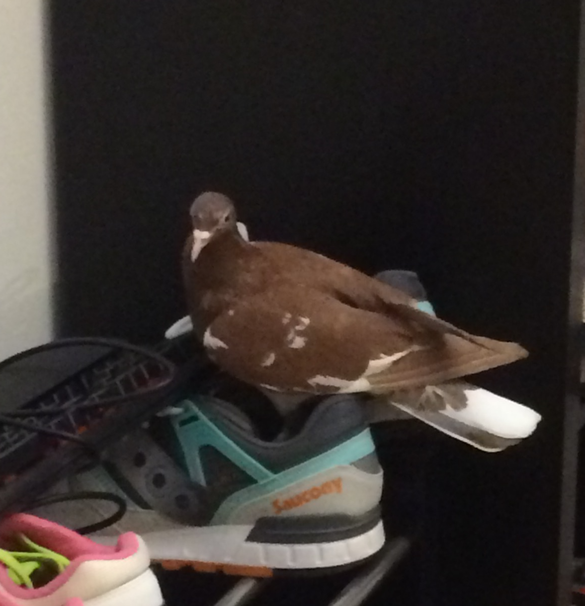
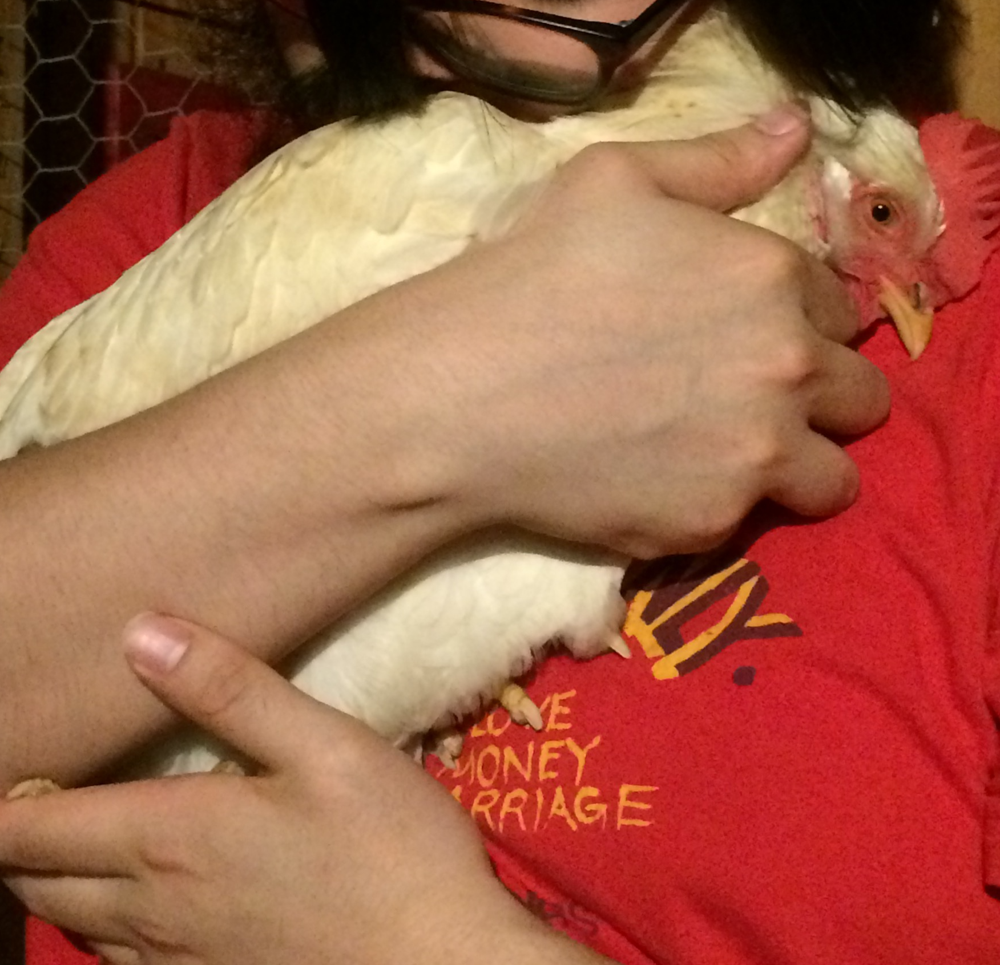

|
Named (sort of) for the Kubernetes container-orchestration system, Cube lives up to their moniker by being the smartest of our birds, an admittedly low bar. They are a Golden-laced Wyandotte chicken who will peck your eyes out if you get between them and a bag of freeze-dried mealworms. Role: The Brains |
|  |
Madeline (or "Maddie," to her friends) is a recessive red pigeon, and is definitely the most elegant of our birds, despite a slight tendency to tilt over and slide off of any surface that isn't perfectly flat. She loves snacks, naps, and poofing up into a big ball. Role: The Looks. |
 |
Reginald (or "Reggie") is a pigeon, and an excellent pigeon at that. A little blue ball of energy, he loves cuddles, adventures, and talking hoomins' ears off. Pictured here in a state of delight in his favorite spot: Sara's head. Role: The Muscle. |
|

|
Buttercup is an Amberlink hen who we have raised since she was the size, weight, and intelligence of a marshmallow. Affectionately known as "Danger Bird," she never misses a chance for mischief and may have some ability to teleport. Role: The Wild Card. |